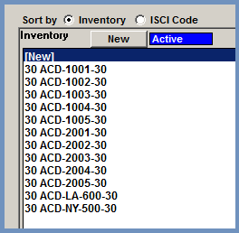
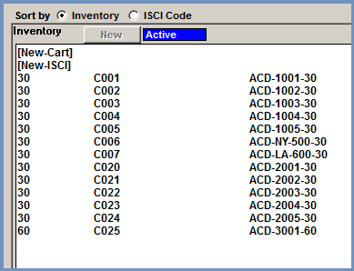
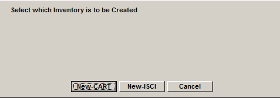
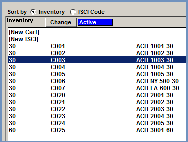
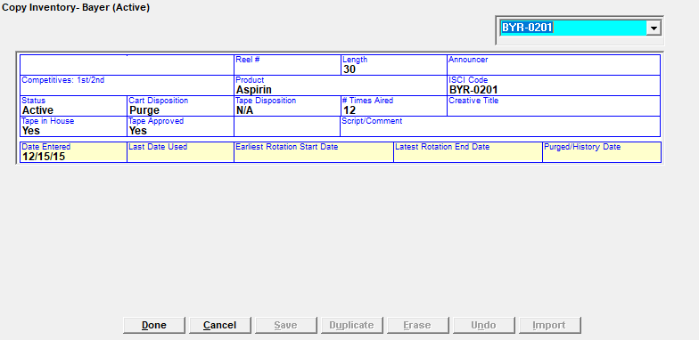
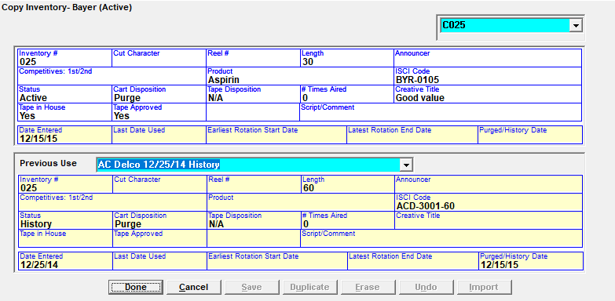
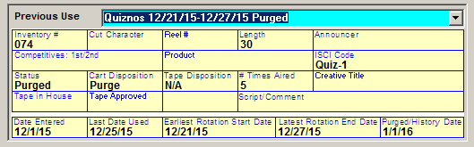

Copy Inventory
Depending on your set up, you can enter copy by Cart Number, ISCI, or both. This is determined by a setting in Traffic Site Options on the Copy tab.
New Inventory
If the system is using copy inventory by cart numbers only, or copy by ISCI only (not both), then new inventory can be entered after selecting the advertiser by double clicking the word “[New]” in the Inventory box on the left side of the screen, or by clicking on a piece of inventory and pressing the “New” button, or by pressing the “New Inv” (New Inventory) button at the bottom of the screen.

Any of these three methods will bring up the Copy Inventory screen from which new inventory can be entered or previously existing inventory can be edited.
If inventory by both Cart Numbers and by ISCI codes is used, double click “[New-Cart]” in the Inventory box to enter a new cart. Double click “[New-ISCI]” to enter a new piece of inventory by ISCI code.

A second way of entering new inventory when using inventory by both Carts and ISCI codes is by pressing the “New Inv” button at the bottom of the Copy screen. When pressing this button, a popup will appear that asks whether to create a new piece of inventory by Cart or by ISCI. Press “New-Cart” to enter a new cart, or press “New-ISCI” to enter a new piece of inventory by ISCI. (Press Cancel to close the popup menu.)

When inventory is by both cart numbers and ISCI codes, when selecting an existing piece of inventory in the Inventory box, the “New” button will become a “Change” button that when pressed allows the user to edit information for the selected piece of inventory.

Inventory Screen
There are two slightly different configurations for the Inventory screen depending on whether it is ISCI inventory or Cart inventory that is being viewed.
The following two images show the different screens followed by an explanation of each field.
The first example below shows copy inventory by ISCI.

This example shows the Copy Inventory screen for a cart.

Inventory Fields
The following section describes the different fields that are available on the Copy Inventory screen.
- Media Code: This field is only available when using carts and when entering a new cart. It appears in the upper left corner of the Copy Inventory screen. If there is more than one Media Definition defined in the system and available for use, it can be selected from the dropdown when entering a new cart. (This field does not appear when inventory is by ISCI.)
- Inventory Dropdown: The inventory listed in the dropdown menu on the right is for cart numbers and ISCI codes. When using Carts and entering a new cart, the list of carts can be set to include “purged only” (only carts with a purged status), “all inventory”, or “never activated” (this option will filter the copy inventory dropdown list to only show those carts that have never been activated - in other words, they’ve been created but never associated with an advertiser) by selecting the corresponding radio button. The list of carts can be sorted by “Date” (purged date) or “Cart” by pressing the Date/Cart toggle. These options are not available when viewing or editing an existing cart. When viewing or editing an existing piece of inventory by ISCI, this dropdown allows you to switch to a different piece of inventory (if there’s one available) by selecting it from the dropdown menu.
- Reel #: An optional value that shows on specific logs. (The Reel # will be replaced with a contract number dropdown if vCreative is activated.)
- Length: The length of the commercial.
- Announcer: Not used.
- Competitives 1st/2nd: Not used.
- Product: Shows the product. A list of products that have been entered for this advertiser will appear in the dropdown, but new products can also be entered.
- ISCI Code: The unique ISCI code for this commercial. ISCI information appears on the Log, Certificates of Performance and invoices.
- Status: There are three statuses that are available.
- Active: The inventory is in use.
- Purged: Expired inventory that can be used for other advertisers.
- History: Previously used but no longer in use.
- Cart Disposition: This value is used as part of the Purge process. For more information on the Purge process, see the Purge section later in this document.
- N/A: When going into the Purge screen, if the rotations using this inventory have all expired as of the entered rotation end date, this inventory will appear in the “to be saved” list.
- Save: When going into the Purge screen, if the rotations using this inventory have all expired as of the entered rotation end date, this inventory will appear in the “to be saved” list.
- Purge: When going into the Purge screen, if the rotations using this inventory have all expired as of the entered rotation end date, this inventory will appear in the “to be purged” list.
- Ask After Expired: When going into the Purge screen, if the rotations using this inventory have all expired as of the entered rotation end date, this inventory will appear in the “to be saved” list.
- Tape Disposition: This field is not used by the system but can be entered for information purposes. The four values are: N/A, Return, Destroy, Ask After Expired.
- Number of Times Aired: Shows a count of the number of times this piece of copy aired. This gets updated when the inventory is assigned.
- Creative Title: This field is used to identify the copy and appears on some log formats.
- Tape In House: Can be set to Yes or No.
- Tape Approved or Tape Carted: The “Copy Tape Show Approved or Carted” question in Site Options->Copy determines how Copy is tracked and approved.
- Tape Approved: This can be set to Yes or No and allows you to approve the commercial content before it airs. All inventory not approved is listed on the Unapproved Copy Report.
- Tape Carted: Allows you to keep track of the carted and uncarted copy by setting this value to Yes or No. When set to No, the inventory will appear in the Inventory area in red text.
- Script/Comment: You can enter the live copy script for this commercial. The live copy script shows on selected logs and the copy inventory reports.
- Date fields: The date fields with a yellow background are automatically updated and used for information purposes only.
- Date Entered: the date the inventory was entered into the system.
- Last Date Used: the last date for which there was a spot airing that this piece of inventory was assigned to.
- Earliest Rotation Start Date: the earliest date for which a copy rotation exists that is using this piece of inventory (the start date of the rotation is used, which may or may not be when the first spot with that copy is airing).
- Latest Rotation End Date: the latest date for which a copy rotation exists that is using this piece of inventory (using the end date of the rotation). By taking the Earliest Rotation Start Date and Latest Rotation End Date together, you can see the entire date span that this inventory is being used for on rotations.
- Purged/History Date: the date that the inventory was purged.
When using Carts, there is a second section that appears below the main part of the inventory screen from which information about the previous uses of the cart can be seen. The information here is updated automatically and is for information purposes only.
An example of the Previous Use information that appears for carts.
